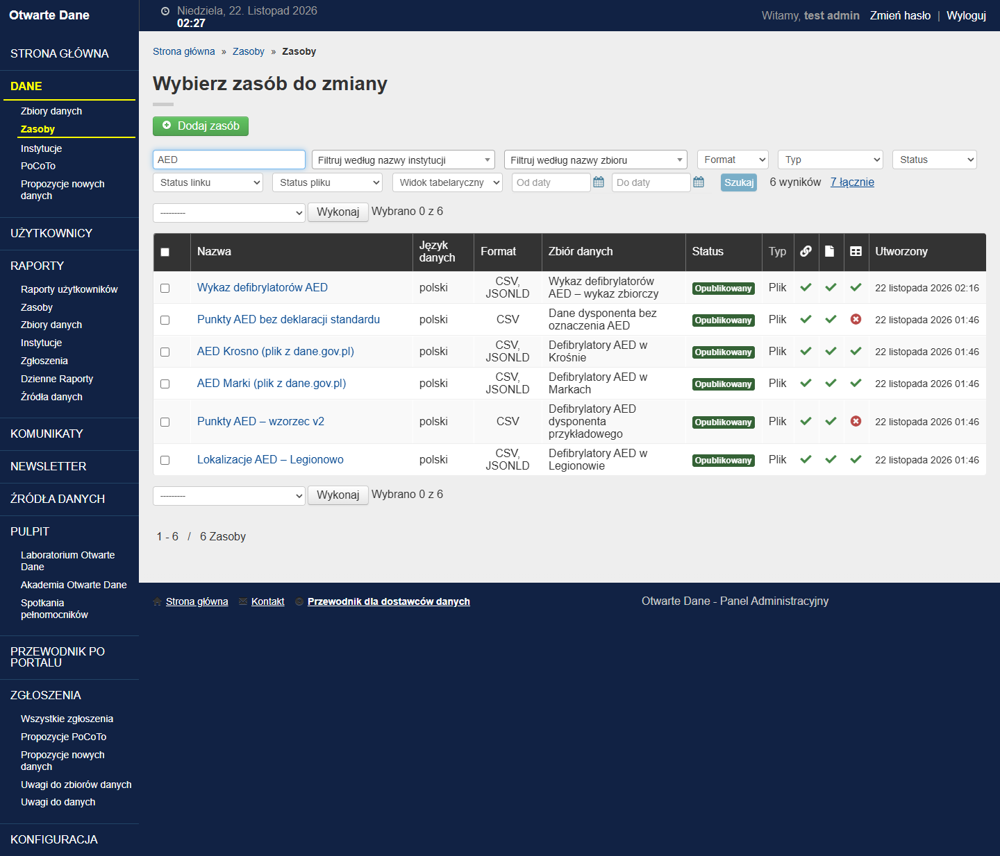
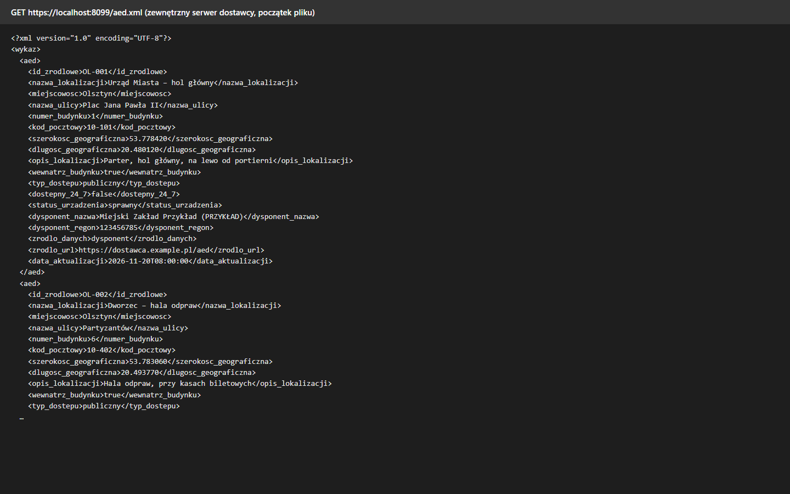
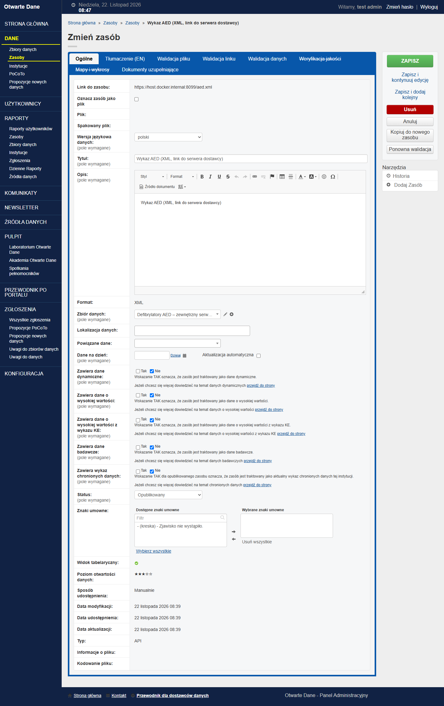
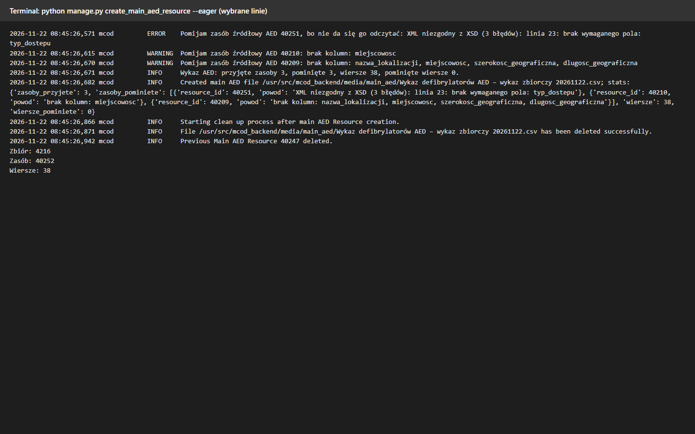
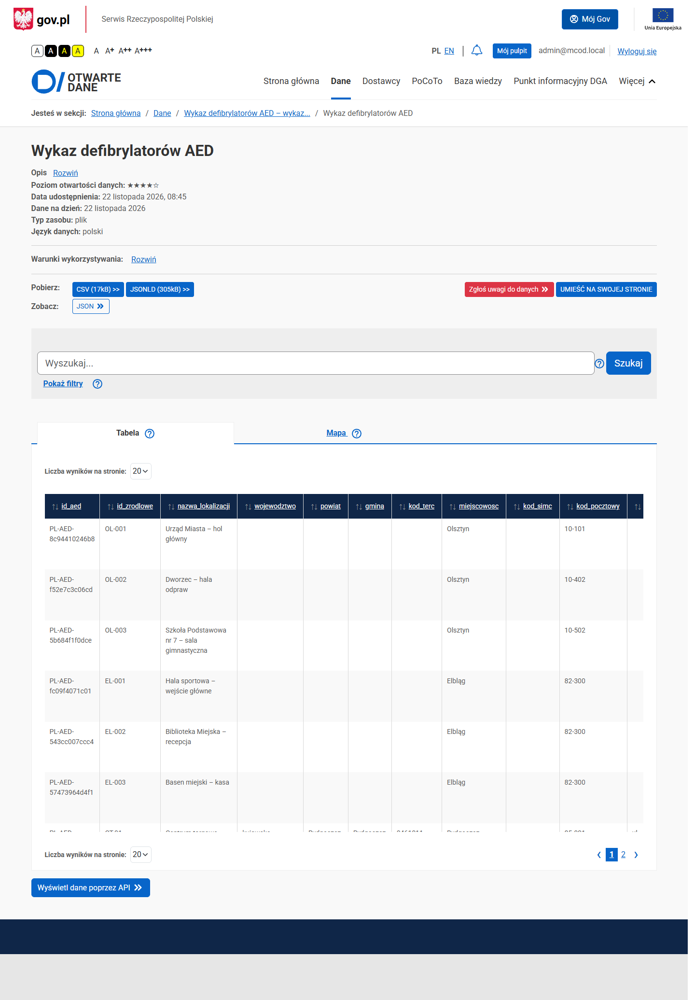

1Dane o AED są rozproszone i każdy publikuje je inaczej
Na dane.gov.pl jest kilka zbiorów o defibrylatorach AED. Każdy ma inny układ kolumn, format i drogę do portalu, a ogólnopolskiego zestawienia nie ma.
| Zbiór | Jak trafia do portalu | Co to znaczy dla wykazu |
|---|---|---|
| Krosno | plik CSV w portalu, CC0 1.0 | czyta się wprost, ale brakuje kolumny miejscowości |
| Przemyśl | link do systemu miasta, 5 dystrybucji (CSV, GeoJSON, JSON, 2×GML) | tylko CSV daje tabelę; bez wyboru jednego zasobu powstałyby duplikaty |
| Marki | plik CSV i XLSX, CC BY 4.0 | oba wadliwe: cały wiersz w jednym polu, zamienione osie współrzędnych |
| Legionowo | plik CSV w zbiorze mieszanym „Zdrowie”, CC0 1.0 | oznaczenie zbioru obejmie też zasoby, które nie dotyczą AED, więc potrzebna jest kontrola kolumn każdego zasobu |
| Warszawa | harvester CKAN; zasób to link do strony WWW | dane są w API miasta z obowiązkowym tokenem, więc portal nie ma tabeli |
| Gdańsk | harvester CKAN; baza pojazdów ZTM w JSON | 278 pojazdów z AED: dane flotowe, a nie punkty |
Cel: jeden ogólnopolski zasób Wykaz AED, który portal co noc składa z zasobów zadeklarowanych przez dostawców. Działa tak jak istniejący mechanizm DGA (nocny zasób zbiorczy z zasobów wielu instytucji), bez nowych tabel w bazie i bez migracji.
Kolejne kroki pokazują ścieżkę dostawcy i odbiorcy. Zrzuty pochodzą ze zmodyfikowanego portalu uruchomionego lokalnie (22.11.2026), a tabela i mapa w kroku 6 korzystają z prawdziwego wyniku naszej funkcji agregacji.
2Dostawca oznacza zbiór: standard = AED
W panelu portalu dostawca otwiera swój zbiór i w „Polach niestandardowych” dodaje pole standard z wartością AED. Wielkość liter nie ma znaczenia, a wersja po spacji jest dopuszczalna, np. AED 1.1. Pod polem portal wyświetla podpowiedź z warunkami przyjęcia do wykazu.
- Używamy istniejącej metadanej
Dataset.customfields, więc nie ma nowego pola, tabeli ani migracji. - Nie używamy tagu ani checkboxa.
- Deklaracja dotyczy zbioru. Każdy zasób zbioru jest dodatkowo sprawdzany w kroku 5.

standard = AED i podpowiedzią dodaną w mcod/datasets/forms.py. Pełny rozmiar3Dostawca publikuje zasób we wzorcowym formacie
Zasób to plik CSV lub XLSX z kolumnami wzorcowego zakresu danych (42 kolumny). Do wykazu wystarczy minimum: nazwa_lokalizacji, miejscowosc, szerokosc_geograficzna, dlugosc_geograficzna. Dostawca może wgrać plik albo podać link, który portal odświeża cyklicznie. Licencja: CC0 1.0 lub CC BY 4.0.
Wzorcowy zakres danych (XLSX) Opis formatu i schematy Przykładowy plik CSV

numer_budynku. Wykaz i tak je przyjmuje, bo czyta plik wprost. Pełny rozmiar
4Dane z zewnątrz przez API: opis zbioru w XML, plik CSV i suma md5
Dostawca nie musi być na dane.gov.pl. W swoim API (na własnym serwerze https) wystawia dwa pliki: opis zbioru w XML (tytuł, dysponent, licencja, częstotliwość aktualizacji, link do danych i suma md5) oraz dane w CSV zgodnym ze wzorcem (42 kolumny).
Portal pobiera opis po HTTPS i przyjmuje tylko odpowiedź z kodem 200. Pierwszy import uruchamia komenda manage.py import_aed_xml <adres opisu> --organizacja <id> (--dry-run tylko sprawdza). Portal sprawdza opis schematem XSD, pobiera CSV spod linku z opisu i porównuje jego sumę md5 z sumą z opisu. Potem kontroluje kolumny i dopiero wtedy zapisuje zbiór i zasób. Niezgodny opis albo plik niczego nie zapisuje. Zbiór dostaje w „Polach niestandardowych” wpisy standard = AED, opis_xml i md5.
Co noc o 4:05 zadanie Celery refresh_aed_opis_task ponownie pobiera każdy taki opis (to samo robi ręcznie --odswiez). Ta sama suma md5 nic nie zmienia, a inna oznacza nowe dane i zasób jest zastępowany. O 4:15 budowa wykazu usuwa duplikaty: to samo urządzenie zgłoszone przez dwóch dostawców trafia do wykazu raz.
- opis XML z API dostawcy (kod 200)
- walidacja XSD
- pobranie CSV
- kontrola md5
- kontrola CSV
- zbiór i zasób w portalu
- nocne odświeżenie opisu (4:05)
- deduplikacja przy budowie wykazu (4:15)
| Krok | Wynik | Szczegóły |
|---|
| Linia | Pole | Komunikat |
|---|
Zawartość opisu (numery linii; błędne linie wyróżnione)
Opis zbioru (XML) Dane dostawcy (CSV) Schemat XSD opisu Wyniki (JSON)
Deduplikacja przy budowie wykazu
Plik dostawcy zawiera urządzenie, które jest już w pliku innego dostawcy: ten sam producent i numer seryjny, inny identyfikator i inna nazwa lokalizacji. Funkcja portalu deduplicate_rows (mcod/resources/aed_dedup.py) zostawia jeden wiersz: ten z wyższym poziomem weryfikacji, a przy remisie nowszy. Puste pola producenta, modelu i numeru seryjnego uzupełnia z duplikatu. Każdą parę zapisuje w statystykach i logu.
Wynik w portalu uruchomionym lokalnie (22.11.2026, zasób wykazu 40258): 45 wierszy przed deduplikacją, 38 po, 7 duplikatów pominiętych z powodem. Jeden to para powyżej (powód numer_seryjny). Sześć to te same rekordy dostawcy podane raz w zasobie XML, a raz w CSV z opisu (powód nazwa_i_lokalizacja). Log: komenda_create_main_aed_resource_opis.txt, statystyki: statystyki_opis_dedup.json, wykaz: wykaz_opis_xml_dedup.csv.
Serwer dostawcy
Serwer demo/serwer_zewnetrzny.py (dane fikcyjne) wystawia opisy, CSV i schematy. Link do CSV wpisuje do opisu na podstawie adresu, pod którym go wywołano, więc ten sam opis działa lokalnie, z kontenera portalu i przez ngrok. Pomiar demo/sprawdz.py (serwer uruchomiony w wątku na wolnym porcie 127.0.0.1):
| Adres | Kod HTTP | Czas [ms] | Bajty |
|---|
Wariant dodatkowy: rekordy AED wprost w XML (schemat aed_punkty.xsd)
Zamiast opisu i CSV dostawca może wystawić same rekordy AED w pliku XML, a w portalu dodać zasób z linkiem do tego pliku. Co noc zadanie Wykazu AED pobiera plik spod linku, waliduje go XSD, zamienia na te same kolumny wzorca co CSV i XLSX i scala z pozostałymi źródłami. Plik niezgodny z XSD jest pomijany, a powód trafia do logu.
| Linia | Pole | Komunikat |
|---|
Zawartość pliku (numery linii; błędne linie wyróżnione)
Poprawny XML Błędny XML Schemat XSD Weryfikacja maszynowa
Ten sam proces w zmodyfikowanym portalu
Zrzuty z portalu uruchomionego lokalnie (22.11.2026): serwer dostawcy to demo/serwer_zewnetrzny.py (dane fikcyjne), a zasób w portalu ma link do niego.








5Portal sprawdza zasoby i co noc buduje Wykaz AED
Zadanie Celery uruchamia się codziennie o 4:15, po harvesterze (3:00), DGA (3:30) i odświeżeniu opisów zbiorów z XML (4:05). Ten sam proces można wywołać ręcznie komendą manage.py create_main_aed_resource. Cały dodatek wyłącza ustawienie AED_AGGREGATION_ENABLED; wtedy portal działa jak oryginał.
Wynik uruchomienia w portalu lokalnym

Ta sama logika na migawce realnych zasobów z dane.gov.pl (demo/agreguj.py, bez bazy)
Skrypt demo/agreguj.py wywołuje funkcje agregacji z portal/backend/mcod/resources/aed_aggregation.py poza Django. Wszystkie zbiory z migawki traktuje tak, jakby miały standard = AED.
6Odbiorca przegląda Wykaz AED
W portalu Wykaz AED to zwykły zasób z tabelą, mapą i wyszukiwaniem (zrzuty w kroku 7). Poniżej te same dane można przejrzeć offline: to dokładnie plik demo/wynik/zestawienie_aed.csv wyprodukowany przez demo/agreguj.py z realnego zasobu Legionowa (CC0), przykładu wzorca i pliku dostawcy zewnętrznego z opisem XML (oba z danymi fikcyjnymi). Przed zapisem działa deduplikacja portalu: z wierszy zostało , bo plik dostawcy powtarza urządzenie z przykładu wzorca (ten sam producent i numer seryjny).
Wybór miejscowości w filtrze przybliża mapę do jej punktów. Kontur Polski: Natural Earth (domena publiczna), projekcja równoodległościowa. Mapa nie pobiera kafelków z sieci.
| Lokalizacja | Miejscowość i adres | Dostęp | Status | Źródło |
|---|
7Pobieranie i API
Wykaz AED pobiera się jak każdy zasób portalu (CSV, JSON-LD), a API portalu udostępnia jego dane, punkty mapy i stały adres, pod którym zawsze jest aktualny zasób zbiorczy.
Plik powstaje w przeglądarce z wbudowanych danych, bez sieci.
Stały adres zasobu zbiorczego: GET /1.4/aed-aggregated
Nowy endpoint, odpowiednik istniejącego /dga-aggregated. Odpowiedź z portalu lokalnego:
Dane i punkty mapy udostępniają istniejące endpointy portalu: /1.4/resources/{resource_id}/data i /1.4/resources/{resource_id}/geo.
Zrzuty z portalu


geo w schemacie zasobu zbiorczego. Pełny rozmiar
/1.4/aed-aggregated (sformatowana). Pełny rozmiar
8Co zmieniliśmy w portalu
- Rozszerzamy, niczego nie usuwamy. Kod Wykazu AED jest w nowych plikach obok DGA. Funkcje DGA importujemy, a nie kopiujemy.
- W istniejących plikach są tylko dopisane punkty zaczepienia: harmonogram, trasa API, ustawienia, eksport zadania i podpowiedź formularza.
- Zero migracji:
makemigrations --checkzwraca „No changes detected”. Testy DGA przechodzą bez zmian.
| Plik | Zmiana | Linie +/− | Po co |
|---|

Do pobrania i dalszej lektury
- Instrukcja dla jury: jak sprawdzić zmiany w kodzie
- CHANGELOG portalu z wpisami AED
- Podpisy zrzutów (czego dowodzi każdy zrzut)
- Wzorcowy zakres danych (XLSX)
- Logotyp akcji „Dane (prze)życie” i księga znaku (PDF)
- Prezentacja (PDF)
9Dodatek: integrator dla dostawców bez wzorcowego formatu
To osobny dodatek, nie część zmian w portalu. Dwóch największych dostawców
na dane.gov.pl (Warszawa, Gdańsk) nie da się dziś odczytać jako tabeli. Integrator bierze ich
pliki, mapuje kolumny na wzorzec v2 (42 pola), normalizuje wartości, waliduje i wystawia CSV,
który dostawca podłącza do portalu zwykłym zasobem typu „link”. W portal/ nie przybyło
przez niego ani jednej linii kodu.
Wyniki poniżej generuje jedno polecenie na plikach z repo, bez internetu:
python integrator/generuj_demo.py. Cały proces można też przejść w lokalnym UI
(python integrator/ui/serwer.py, tylko 127.0.0.1).
| Wejście | Wynik |
|---|---|
| Odpowiedź API m.st. Warszawy (przykład z dokumentacji zbioru 39512) | wiersz zgodny ze wzorcem v2, licencja jawnie w pochodzeniu; portal dziś nie ma z tego źródła żadnej tabeli |
| Baza pojazdów ZTM w Gdańsku (zasób 31843) | pojazdów, z AED, 0 wierszy punktowych i jednoznaczny powód: dane flotowe, a wzorzec opisuje punkty |
| Plik z powtórzonymi punktami | kandydat na duplikata – tylko flagowanie par (podobieństwo, odległość), bez scalania |
| Wykaz AED + plik OSM | w obu · tylko w wykazie · tylko w OSM ; raport z oznaczeniem ODbL (OSM tylko lokalnie, nie do publikacji jako CC0/CC BY) |
Dowody i pliki
- README integratora i testy (
integrator/README.md,integrator/testy/– w repozytorium): polecenia, zasady licencji, archiwum v1 - demo/integrator/: pięć plików wynikowych z jednego uruchomienia (m.in. CSV z odpowiedzi Warszawy i statystyka Gdańska)
- Testy: 97 testów, bez Dockera (
python -m unittest discover -s integrator/testy -t .) - Dodatkowe informacje, krok 14: jak sprawdzić dodatek